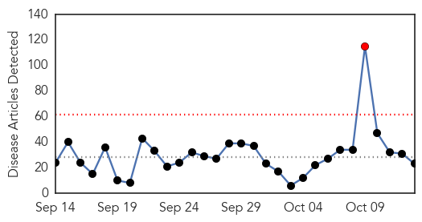
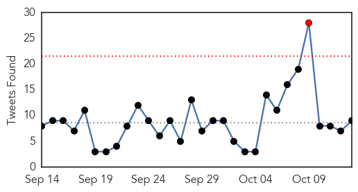
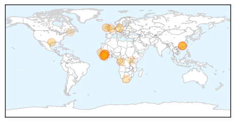
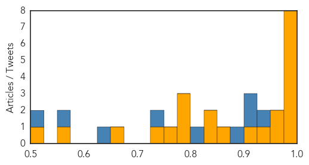
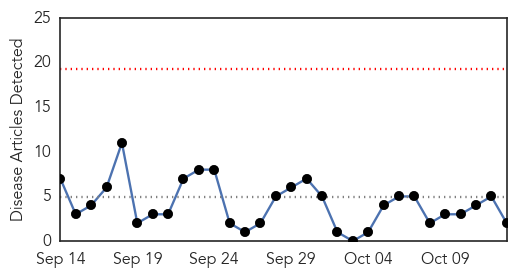
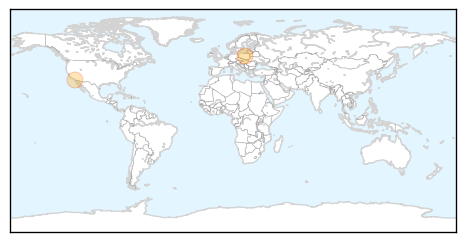

Ebola
30-Day Web Trend
1 alerts, 0 warnings

30-Day Twitter Trend
1 alerts, 0 warnings

Article Locations
Article Confidences
Top Articles:
- 1.000
- Ebola beds prevented 40,000 deaths
- 1.000
- Ebola beds prevented 40,000 deaths
- 0.998
- 40 are given experimental Ebola vaccine
- 0.997
- Close contacts of British Ebola nurse monitored
- 0.997
- Health Care
- 0.978
- Johnson & Johnson Starts Ebola Vaccine Clinical Trial in Sierra Leone
- 0.978
- Salone to be declared free of ebola on 8th November « Awoko Newspaper
- 0.977
- NYC sensitises on dangers of Ebola
- 0.960
- Close contacts of British Ebola nurse monitored
- 0.958
- Org awarded for Ebola response
- 0.931
- Luxembourg nurse awarded European Citizen's Prize
- 0.917
- Medical experts discuss global crises in Berlin
- 0.854
- Ebola vaccine tested in W. Africa
- 0.845
- Diaspora Partnerships: Strengthening the Ties that Bind Us
- 0.843
- Chinese Ebola vaccine starts clinical trials in W Africa
- 0.797
- Chains, Witch Doctors Care for Africa's Mentally Ill
- 0.795
- Ebola vaccine tested in W. Africa
- 0.778
- First Study of Janssen's Ebola Prime-Boost Vaccine Regimen to Start in West Africa
- 0.761
- Built for the Dying, This Facility Is Now Bringing New Life
- 0.750
- Chinese vaccine for Ebola tested in West Africa - Sierra Leone
- 0.665
- Africa fails its young scientists by not investing in their innovations
- 0.565
- Africa fails its young scientists by not investing in their innovations -
- 0.516
- Aid is needed, but not all is helpful
Top Tweets:
- 0.986
- BIOASTER, FUJIFILM Collaborate on Study of Ebola Virus Disease Rapid ... - Benzinga http://t.co/lqnRgDqo9q ebola EVD
- 0.986
- BIOASTER, FUJIFILM Collaborate on Study of Ebola Virus Disease Rapid ... - Benzinga http://t.co/BmcumoX1ok ebola EVD
- 0.970
- Collaborative study for a rapid diagnostic test for Ebola Virus Disease by ... - FierceMedicalDevi... http://t.co/5xDXYRuigF ebola EVD
- 0.966
- CRMC Dubbed Ebola Assessment Hospital - KGWN http://t.co/AVmIonBmAS ebola EVD
- 0.961
- Ebola treatment beds prevented 57,000 Ebola cases and 40,000 deaths in SierraLeone https://t.co/htAV9w9UVU
- 0.951
- Thousands died because Ebola treatment beds reached Sierra Leone too late ... - Washington Post http://t.co/1v3F2uCxzR ebola EVD
- 0.891
- Ebola outbreak in West Africa 22 months on Key issues for recovery and preparedness http://t.co/fCw5ImTbsy
- 0.871
- Ebola: apporter de l’aide à ceux qui en ont désespérément besoin http://t.co/zf2VjQpw3b
- 0.794
- Ebola treatment units (ETUs) can help control outbreaks. Read about establishment of ETU in Bombali, Sierra Leone. http://t.co/nCVwwr12cY
- 0.770
- Où en est l’épidémie d’Ebola ? http://t.co/7GYoIAOU45 via
- 0.762
- Qu’en est-il des orphelins d’Ebola au Liberia ? https://t.co/ShqQach9Ex via
- 0.729
- New Hope of a Cure For Ebola? Antiviral Compound Cures Infected Monkeys - Latinos Post http://t.co/21xZJtKgYc ebola EVD
- 0.687
- Lessons from Ebola: Improving infectious disease surveillance to inform outbreak management http://t.co/pjwGVybxCU via
- 0.661
- NYC Sensitises On Dangers of Ebola - http://t.co/NaiI6Jl8yj http://t.co/cA1p07kyUF ebola EVD
- 0.653
- Thousands died because Ebola treatment beds reached Sierra Leone too late ... - Washington Post http://t.co/T45EuQV38y
- 0.647
- Ebola viral disease and pregnancy ObstetricMedicine http://t.co/2nDRmHSXHc
- 0.538
- Leçons tirées pour la Santé publique d'Ebola: comment améliorer la prép et réponse de l’UE pour des épidémies futures http://t.co/sG5ep510UP
- 0.505
- RT: .@UNICEFGuinea’s talks with about decline of cases in the country http://t.co/xWDC7zItZE Ebola
- 0.504
- RT: Contacts of hospitalized UK nurse get Ebola vaccine http://t.co/8tFqiYfdNV
Meningitis
30-Day Web Trend
0 alerts, 0 warnings

30-Day Twitter Trend
1 alerts, 0 warnings

Article Locations
Article Confidences

Top Articles:
Top Tweets:
-
No tweets found for Oct 13, 2015